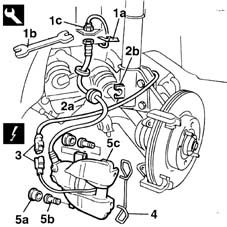

3310A30 FRONT BRAKE CALIPER (one) - R.R.
- Path
- Procedures > 33 BRAKING SYSTEM > 3310 DISC BRAKES > 3310A FRONT DISC BRAKES > 3310A30 FRONT BRAKE CALIPER (one) - R.R.
- Kind
- repair procedure (removal / refitting; the operation number is the code)
- Applies to
- all engines; all production periods
- Interactive page
- https://sloeber94.github.io/elrnDB-fMltpl/en/#/2891571
Applies to: all engines; all production periods
 Removing
Removing
 Refitting
Refitting4450B10 Front WHEEL (one) - R.R.
1. Remove the fixing spring (1a), using the tool (1b) undo the connector (1c) for the brake pipe.
2. Release the rubber retainer (2a) for the brake pipe from the housing (2b) in the suspension damper.
3. Disconnect the electrical connection for the brake pad wear cable.
4. Remove the spring fixing the brake caliper to the bracket.
5. Remove the rear bolt covers (5a), undo the bolts (5b) underneath, then remove the complete front brake caliper (5c).
 | Name | Country |
|---|---|---|
1b | Box wrench for brake fittings | 1.856.132.000 |

Applies to: all engines; all production periods
Refitting
RemovingFit the front brake caliper on the disc.
Fix the brake caliper tightening the two rear fixing bolts to the recommended torque.
 | Fastening | Component | Ø | Value (daNm) |
|---|---|---|---|---|
- | Bolt | FRONT BRAKE CALIPER ASSEMBLY | M8 | 2.4 |
Fit the caliper fixing spring in the correct position.
Connect the brake pad wear electrical connection.
Tighten the pipe connector to torque, secure the pipe on the suspension damper and fit the brake pipe fixing spring.
| Fastening | Component | Ø | Value (daNm) |
|---|---|---|---|---|
- | Nut | FITTING FOR PIPE TO CALIPER | M10 | 1.4 |
3330A10 BRAKE FLUID - Check level and top up, if necessary.
3330A14 HYDRAULIC BRAKING SYSTEM - Bleed air
4450B10 Front WHEEL (one) - R.R.
Remove the vehicle from the ramp.
Topics linked from this page (3)
- 3330A10 BRAKE FLUID - Check level and top up, if necessary.
- 3330A14 HYDRAULIC BRAKING SYSTEM - Bleed air
- 4450B10 Front WHEEL (one) - R.R.